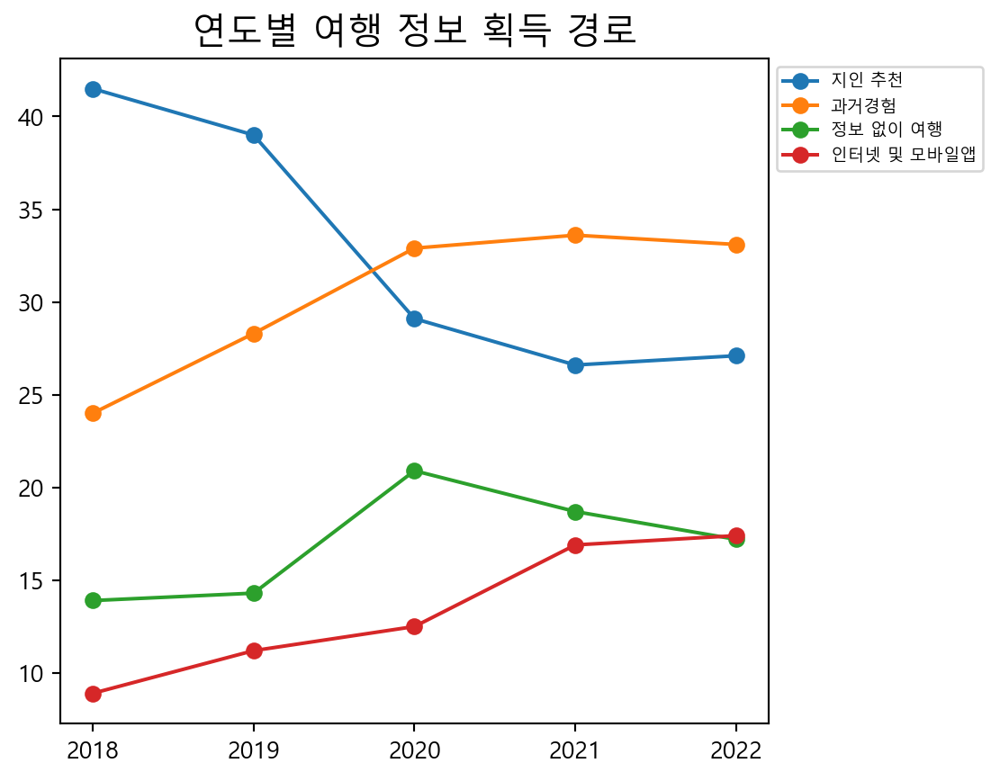

import numpy as np
import pandas as pd
route = pd.read_excel("C:/Users/USER/Documents/LS빅데이터스쿨/team3_project/youna/youna_route.xlsx",header=1)여행 정보 획득 경로
전처리
데이터 불러오기
결측치 처리
# 연도 결측치 처리
route.loc[0:8,"year"] = "2018"
route.loc[9:17,"year"] = "2019"
route.loc[18:26,"year"] = "2020"
route.loc[27:35,"year"] = "2021"
route.loc[36:43,"year"] = "2022"
# 결측치 제거
route.replace('-', np.nan, inplace=True)변수명 바꾸기
# 변수 영어로 변경
route = route.rename(columns = {"시점":"year", "항목":"access_path", "소계" : "total", "남자" : "male", "여자" : "female"})
# 경로명 영어로 바꾸기
route.loc[route["access_path"]=="과거 방문 경험", "access_path"] = "experience"
route.loc[route["access_path"]=="주변인(친지/친구/동료 등)", "access_path"] = "acquaintance"
route.loc[route["access_path"]=="인터넷 사이트/모바일 앱(PC/스마트폰)", "access_path"] = "internet_mobile_app"
route.loc[route["access_path"]=="광고(TV/라디오/ 신문/잡지/ 지하철/옥외 광고판 등)", "access_path"] = "advertising"
route.loc[route["access_path"]=="기사 및 방송 프로그램(TV/라디오/ 신문/잡지)", "access_path"] = "article_broadcast"
route.loc[route["access_path"]=="관광 안내 서적", "access_path"] = "guidebook"
route.loc[route["access_path"]=="여행사(방문, 전화)", "access_path"] = "travel_agency"
route.loc[route["access_path"]=="정보 없이 방문", "access_path"] = "no_information"
route.loc[route["access_path"]=="기타", "access_path"] = "etc"
# 가구 영어로 바꾸기
route = route.rename(columns = { '1인' : 'per1',
'2인' : 'per2',
'3인이상' : 'per3+'})
# 학벌 영어로 바꾸기
route = route.rename(columns = { '초졸 이하' : 'elmt',
'중학교' : 'mid',
'고등학교' : 'high',
'대학교이상' : 'univ+',
})변수 합치기
# 연령대
route["teens"] = route["15~19세"]
route["young_adults"] = route["20대"] + route["30대"]
route["middle_adults"] = route["40대"] + route["50대"]
route["senior"] = route["60대"] + route["70세 이상"]
#2018
route.loc[0:8, "young_adults"] = (route.loc[0:8, "young_adults"] / route.loc[0:8, "young_adults"].sum() * 100).round(1)
route.loc[0:8, "middle_adults"] = (route.loc[0:8, "middle_adults"] / route.loc[0:8, "middle_adults"].sum() * 100).round(1)
route.loc[0:8, "senior"] = (route.loc[0:8, "senior"] / route.loc[0:8, "senior"].sum() * 100).round(1)
#2019
route.loc[9:17, "young_adults"] = (route.loc[9:17, "young_adults"] / route.loc[9:17, "young_adults"].sum() * 100).round(1)
route.loc[9:17, "middle_adults"] = (route.loc[9:17, "middle_adults"] / route.loc[9:17, "middle_adults"].sum() * 100).round(1)
route.loc[9:17, "senior"] = (route.loc[9:17, "senior"] / route.loc[9:17, "senior"].sum() * 100).round(1)
#2020
route.loc[18:26, "young_adults"] = (route.loc[18:26, "young_adults"] / route.loc[18:26, "young_adults"].sum() * 100).round(1)
route.loc[18:26, "middle_adults"] = (route.loc[18:26, "middle_adults"] / route.loc[18:26, "middle_adults"].sum() * 100).round(1)
route.loc[18:26, "senior"] = (route.loc[18:26, "senior"] / route.loc[18:26, "senior"].sum() * 100).round(1)
#2021
route.loc[27:35, "young_adults"] = (route.loc[27:35, "young_adults"] / route.loc[27:35, "young_adults"].sum() * 100).round(1)
route.loc[27:35, "middle_adults"] = (route.loc[27:35, "middle_adults"] / route.loc[27:35, "middle_adults"].sum() * 100).round(1)
route.loc[27:35, "senior"] = (route.loc[27:35, "senior"] / route.loc[27:35, "senior"].sum() * 100).round(1)
#2022
route.loc[36:43, "young_adults"] = (route.loc[36:43, "young_adults"] / route.loc[36:43, "young_adults"].sum() * 100).round(1)
route.loc[36:43, "middle_adults"] = (route.loc[36:43, "middle_adults"] / route.loc[36:43, "middle_adults"].sum() * 100).round(1)
route.loc[36:43, "senior"] = (route.loc[36:43, "senior"] / route.loc[36:43, "senior"].sum() * 100).round(1)#월급
route["l_sal"] = route["100만원 미만"] + route["100~200만원 미만"]
route["m_sal"] = route["200~300만원 미만"] + route["300~400만원 미만"] + route["400~500만원 미만"]
route["h_sal"] = route["500~600만원 미만"] + route["600만원 이상"]
route["nr"]= route["무응답"]
#2018
route.loc[0:8, "l_sal"] = (route.loc[0:8, "l_sal"] / route.loc[0:8, "l_sal"].sum() * 100).round(1)
route.loc[0:8, "m_sal"] = (route.loc[0:8, "m_sal"] / route.loc[0:8, "m_sal"].sum() * 100).round(1)
route.loc[0:8, "h_sal"] = (route.loc[0:8, "h_sal"] / route.loc[0:8, "h_sal"].sum() * 100).round(1)
#2019
route.loc[9:17, "l_sal"] = (route.loc[9:17, "l_sal"] / route.loc[9:17, "l_sal"].sum() * 100).round(1)
route.loc[9:17, "m_sal"] = (route.loc[9:17, "m_sal"] / route.loc[9:17, "m_sal"].sum() * 100).round(1)
route.loc[9:17, "h_sal"] = (route.loc[9:17, "h_sal"] / route.loc[9:17, "h_sal"].sum() * 100).round(1)
#2020
route.loc[18:26, "l_sal"] = (route.loc[18:26, "l_sal"] / route.loc[18:26, "l_sal"].sum() * 100).round(1)
route.loc[18:26, "m_sal"] = (route.loc[18:26, "m_sal"] / route.loc[18:26, "m_sal"].sum() * 100).round(1)
route.loc[18:26, "h_sal"] = (route.loc[18:26, "h_sal"] / route.loc[18:26, "h_sal"].sum() * 100).round(1)
#2021
route.loc[27:35, "l_sal"] = (route.loc[27:35, "l_sal"] / route.loc[27:35, "l_sal"].sum() * 100).round(1)
route.loc[27:35, "m_sal"] = (route.loc[27:35, "m_sal"] / route.loc[27:35, "m_sal"].sum() * 100).round(1)
route.loc[27:35, "h_sal"] = (route.loc[27:35, "h_sal"] / route.loc[27:35, "h_sal"].sum() * 100).round(1)
#2022
route.loc[36:43, "l_sal"] = (route.loc[36:43, "l_sal"] / route.loc[36:43, "l_sal"].sum() * 100).round(1)
route.loc[36:43, "m_sal"] = (route.loc[36:43, "m_sal"] / route.loc[36:43, "m_sal"].sum() * 100).round(1)
route.loc[36:43, "h_sal"] = (route.loc[36:43, "h_sal"] / route.loc[36:43, "h_sal"].sum() * 100).round(1)불필요한 열 없애기
# 나이
route = route.drop(['15~19세', '20대', '30대', '40대', '50대', '60대', '70세 이상'], axis=1)
# 직업
route = route.drop(['임금봉급근로자', '고용원있는사업주', '고용원없는자영업자',
'무급가족 종사자', '사무전문', '기술생산노무', '판매서비스',
"자영업","전업주부","학생","무직은퇴","기타"], axis=1)
# 월급
route = route.drop(['100만원 미만', '100~200만원 미만', '200~300만원 미만', '300~400만원 미만', '400~500만원 미만','500~600만원 미만', '600만원 이상', "무응답"], axis=1)
route.info() <class 'pandas.core.frame.DataFrame'>
RangeIndex: 44 entries, 0 to 43
Data columns (total 21 columns):
# Column Non-Null Count Dtype
--- ------ -------------- -----
0 year 5 non-null float64
1 access_path 44 non-null object
2 total 44 non-null float64
3 male 44 non-null float64
4 female 43 non-null float64
5 elmt 41 non-null float64
6 mid 42 non-null float64
7 high 44 non-null float64
8 univ+ 44 non-null float64
9 per1 43 non-null float64
10 per2 43 non-null float64
11 per3+ 44 non-null float64
12 year 44 non-null object
13 teens 42 non-null float64
14 young_adults 42 non-null float64
15 middle_adults 42 non-null float64
16 senior 41 non-null float64
17 l_sal 38 non-null float64
18 m_sal 42 non-null float64
19 h_sal 42 non-null float64
20 nr 7 non-null float64
dtypes: float64(19), object(2)
memory usage: 7.3+ KB전처리한 데이터 파일 추출
route.to_excel('pre_route.xlsx', index=False)5개년 평균 경로 순위 막대그래프
import matplotlib.pyplot as plt
import seaborn as sns
import pandas as pd
import numpy as np
pre_route = pd.read_excel("C:/Users/USER/Documents/LS빅데이터스쿨/team3_project/youna/pre_route.xlsx")
##1. 5개년 평균 경로 순위 구하기
route2=pre_route.groupby("access_path")\
.agg(total_mean = ("total","mean"))
route2 = route2.sort_values(["total_mean"], ascending = False)
##2. 그래프화 화기
plt.clf()
plt.rcParams['font.family'] ='Malgun Gothic'
plt.subplots_adjust(bottom=0.2)
sns.barplot(data=route2, x="access_path", y="total_mean", palette = "Set1")
plt.xlabel('여행 정보 획득 경로')
plt.ylabel('소계')
plt.xticks(rotation=20)
plt.xticks(fontsize=8)
plt.title('5개년 평균 여행 정보 획득 경로',fontsize=15)
plt.show()C:\Users\USER\AppData\Local\Temp\ipykernel_4536\2622033830.py:19: FutureWarning:
Passing `palette` without assigning `hue` is deprecated and will be removed in v0.14.0. Assign the `x` variable to `hue` and set `legend=False` for the same effect.

연도별 정보 획득 경로 추이
from matplotlib.ticker import MaxNLocator
pre_route = pd.read_excel("C:/Users/USER/Documents/LS빅데이터스쿨/team3_project/youna/pre_route.xlsx")
route_path1 = pre_route.query("access_path=='acquaintance'")
route_path2 = pre_route.query("access_path=='experience'")
route_path3 = pre_route.query("access_path=='no_information'")
route_path4 = pre_route.query("access_path=='internet_mobile_app'")
plt.clf()
plt.plot(route_path1["year"], route_path1["total"], marker='o', label="지인 추천")
plt.plot(route_path2["year"], route_path2["total"], marker='o', label="과거경험")
plt.plot(route_path3["year"], route_path3["total"], marker='o', label="정보 없이 여행")
plt.plot(route_path4["year"], route_path4["total"], marker='o', label="인터넷 및 모바일앱")
plt.gca().xaxis.set_major_locator(MaxNLocator(integer=True))
plt.subplots_adjust(right=0.71)
plt.legend(loc='upper left', bbox_to_anchor=(1, 1),fontsize=7)
plt.rcParams['font.family'] ='Malgun Gothic'
plt.title('연도별 여행 정보 획득 경로',fontsize=15)
plt.show()
결론
지인추천, 과거경험, 정보없이 여행, 인터넷 및 모바일앱이 가장 많이 여행 정보를 획득하는 경로로 파악됨. 지인추천은 2018년도 이후로 감소하는 추세이고, 인터넷 및 모바일앱은 계속해서 증가하는 추세임.